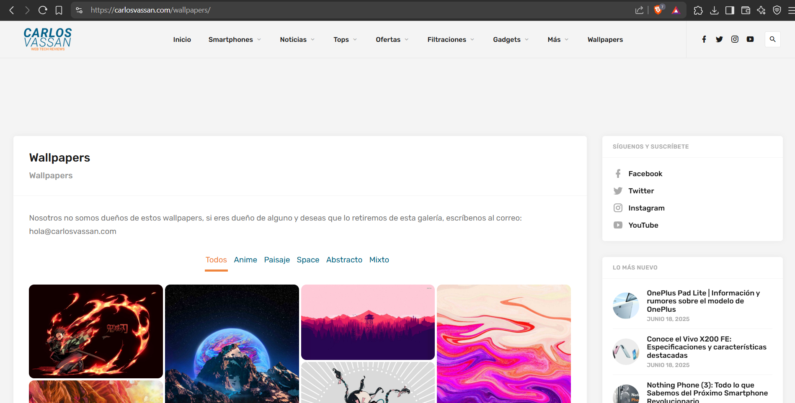

Esta pequeña y breve página web, tuvo como inspiración y referencia a la página del creador de contenido llamado Carlos Vassan, quien es un creador de contenido del tipo tecnológico y su sitio web, fué creado con la finalidad de compartir con sus seguidores algunas cosas que aparecian en videos, en este caso "Wallpapers" o fondos de pantalla. link de referencia:(https://carlosvassan.com/wallpapers/)
